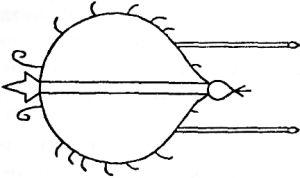
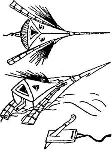
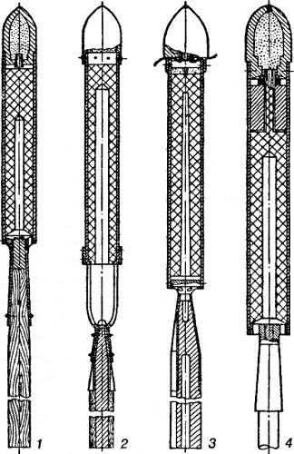

Ракетные войска императора
Для того чтобы сделать открытие, вовсе не нужно глотать пыль архивов и корпеть над выписанными из-за границы справочниками. Бывает, что книги, стоящие на наших домашних полках, содержат в себе неисчислимое количество информации, нами когда-то читанной, воспринятой, переваренной, но затем успешно позабытой. Перелистывая их вновь, мы с огромным для себя удивлением обнаруживаем, что оставили без внимания некий потрясающий воображение факт, который и теперь способен перевернуть наше мировоззрение, а значит, совершаем таким образом маленькое, но очень важное для себя открытие.
Вот и я, разбирая старые годовые комплекты журналов «Техника — молодежи», вдруг наткнулся на небольшой очерк, в котором рассказывалось о предыстории ракетостроения, и был потрясен, когда выяснилось, что технологии, считавшиеся достижением исключительно второй половины XX века, успешно применялись задолго до того, как были описаны популярными фантастами. Как ни странно, в этой области реальность опередила мечту! И опередила с большим отрывом!
Вот лишь один пример из множества ему подобных. Общеизвестно, что первые ракеты применяли еще китайцы, используя их для устройства фейерверков и для поджогов крепостей противника. А что вы скажете о первом запуске ракет с подводной лодки? Когда, вы думаете, он состоялся?.. После Второй мировой войны?..
А вот и нет. Первый успешный запуск ракет с подводной лодки состоялся 29 августа 1834 года на реке Неве! И Александр Сергеевич Пушкин вполне мог наблюдать этот запуск, если бы кто-нибудь пустил взбалмошного и уличенного в нонконформизме поэта на секретные испытания перспективных видов вооружений.
Речь идет о металлической подводной лодке конструкции нашего соотечественника Карла Андреевича Шильдера. Этот совершенно фантастический по тем временам аппарат водоизмещением 16,4 тонны имел удлиненную обтекаемую форму, две наблюдательные башни (в одной из них располагался перископ) и систему восстановления воздушной среды, основным элементом которой являлся центробежный вентилятор. Лодка Шильдера с экипажем из 10 человек могла погружаться на глубину до 12 метров и производить залп пороховыми ракетами калибра 4 дюйма (102 миллиметра) из шести труб, расположенных на корпусе и способных изменять положение для создания необходимого угла возвышения. Лодка успешно прошла цикл испытаний, однако так и не была принята на вооружение: Комитет о подводных опытах дал негативную оценку проекту Шильдера, указав на главный его недостаток — была совершенно не продумана система подводной навигации.
Тем не менее на фоне русской чудо-субмарины, вооруженной ракетами, даже «Наутилус» капитана Немо (придуманный Жюлем Верном в 1869 году, то есть через 35 лет после испытаний лодки Шильдера) представляется неким анахронизмом: подводная лодка с носовым тараном — подумать только!
(Тут мне могут возразить, что «Наутилус» был лучше российского ракетоносца, поскольку использовал электроэнергию в качестве движущей силы, а Шильдер, мол, не придумал ничего лучшего, как посадить своих моряков-подводников за весла. Тут я отвечу, что Шильдер, не зная о «Наутилусе», которому еще только предстояло пуститься в «историческое» путешествие длиною 20000 лье, уже в 1841 году подумывал о замене мускульной силы гребцов на некое электромеханическое приспособление.)
Подводный ракетоносец Шильдера — далеко не единственное изобретение, обогнавшее свое время. Любой, кто всерьез занимается историей науки и техники, может с ходу перечислить десяток таких проектов: парашют и орнитоптер Леонардо да Винчи, персональный компьютер Чарльза Бэббиджа, металлический дирижабль Константина Циолковского и сферопланы Анатолия Уфимцева. Список можно продолжать и продолжать, забираясь в другие области познания, но вряд ли где-нибудь еще вы найдете такое количество гениальных озарений и перспективных идей, как в ракетостроении.
Однако история ракет — это часть истории космонавтики, а потому нам стоит вернуться на несколько тысячелетий назад и хотя бы в самых общих чертах проследить развитие идеи, открывшей человечеству дорогу к звездам. Вполне может оказаться, что на этом пути нас поджидает множество удивительнейших открытий…
Первую попытку полета при помощи ракет предпринял опять же китаец. Был это некий мандарин Ван Гу, живший аж за 3000 лет до Рождества Христова. Как-то раз он повелел изготовить особый летательный аппарат, который состоял из двух больших змеев с сиденьем, расположенным между ними. Под этим аппаратом закрепили 47 ракет. Их подожгли одновременно 47 слуг и тут… Родственники отчаянного мандарина были безутешны.
Впрочем, историк космонавтики Вилли Лей ставит под сомнение подлинность легенды о Ван Гу, указывая на то, что не существует первоисточника, откуда взята эта легенда, а изустное предание без соответствующей ссылки не может быть воспринято всерьез.
Сам Лей пишет, что наиболее древним из китайских источников, в котором говорится о ракетах, является хроника, известная востоковедам под названием «Тунлян Канму». В этой хронике рассказывается о первом применении ракет при осаде Пекина монголами в 1232 году нашей эры. Китайцы использовали тогда два вида оружия, которые доставили монголам очень много хлопот. Одним из них были бомбы («цинтяньлэй» — «гром, потрясающий небеса»), которые сбрасывались со стен города на войска противника. Другим оружием были так называемые «фэйхоз цяп»— «огненные стрелы». Лей выдвинул предположение, что именно эти «стрелы» и представляли собой ракеты на черном порохе, полученном из древесного угля и селитры.
У китайцев идею ракет переняли арабы. В 1280 году увидела свет «Книга о сражениях с участием кавалерии и военных машин», написанная Хасаном аль-Раммахом, «гениальным горбуном», которого современники любовно называли Недшмэддином, что означает «Светоч веры». В ней приводятся рецепты производства пороха и даются инструкции по изготовлению ракет, которые автор называет «китайскими стрелами». Там же Хасан говорит о новом виде оружия — «ракетной торпеде», состоящей из двух плоских противней, наполненных порохом или другой зажигательной смесью. «Торпеда» была снабжена подобием стабилизатора, обеспечивавшего ей движение по прямой линии, которое осуществлялось с помощью двух больших ракет-двигателей. Все устройство называлось «самодвижущимся горящим яйцом», но о его применении ничего в тексте не сказано.

Примерно в то же время и в Европе появились первые труды о порохе и ракетах, называемых «ignis volans» («летающий огонь»).
Изобретение пороха здесь приписывали как англичанину Фрэнсису Бэкону, так и немецкому монаху Бертольду Шварцу, однако, скорее всего, этот секрет стал всеобщим достоянием почти единовременно на всей территории Европы,
Немецкий алхимик Альберт Магнус в своей книге «О чудесах мира», написанной между 1250 и 1280 годами, уже без всяких околичностей советовал для получения порохового заряда брать фунт серы, 2 фунта древесного угля и б фунтов селитры. Этот рецепт он скопировал из другой книги, которая носила название «Liber Ignium» («Огневая книга») и была написана несколько раньше неким Марком Греком, который, скорее всего, пользовался арабским источником.
То, что появление ракет было не просто литературным вымыслом, доказывается случайными ссылками на сам предмет. Так, замечание о ракетах содержится в «Кельнской хронике» 1258 года. А итальянский историк Муратори, который, собственно, и назвал ракету «ракетой», приписывает этому «новому» оружию важную роль в сражении при Кьодже в 1379 году.
В то время уже существовало огнестрельное оружие, но оно еще было весьма несовершенным, и ракеты могли составить ему серьезную конкуренцию. Немецкий военный инженер Конрад Эйхштедт в своей книге «Военная фортификация», изданной в 1405 году, говорит о трех типах применяемых ракет: вертикально взлетающих, плавающих и запускаемых при помощи тугого лука.
«Книга о военных принадлежностях» итальянского военного инженера де Фонтаны, появившаяся примерно в 1420 году, полна еще более смелых предложений. Этот труд содержит чертежи ракет в виде летающих голубей, плавающих рыб и бегущих зайцев, предназначенных автором для поджога укреплений противника. Например, ракета «Бегущий заяц» должна была устанавливаться на деревянной доске и передвигаться не на колесах, а на деревянных роликах: де Фонтана искал устройство, которое позволило бы замаскированной ракете преодолеть неровную местность. Кроме того, де Фонтана разработал конструкцию «ракетной машины» для пробивания брешей в стенах или в воротах крепостей и сделал набросок деревянной «ракетной торпеды», напоминавшей своей формой и раскраской голову морского чудовища.
Дальнейшие опыты с пороховыми ракетами привели к появлению весьма оригинальных проектов. Так, в неопубликованном манускрипте Рейнгарта фон Зольмса, относящемся к началу XVI века, описываются ракеты с парашютами. А граф Нассау предложил ракету, которая могла нырять и взрываться под водой.

Спустя некоторое время архитектор Иосиф Фуртенбах из Ульма написал две интересные книги о применении ракет в военно-морском деле. Как утверждал Фуртенбах, ракеты могли использоваться на море не только для сигнализации, но и в качестве зажигательного средства, рассчитанного на поджог просмоленного такелажа кораблей противника. Фуртенбах отмечал, что пираты уже пользуются этим средством, и предлагал применять его для борьбы с пиратами.
В России черный дымный порох появился, по свидетельствам летописей, в XIV веке. Первые сведения об использовании ракет в качестве оружия на Украине относятся к XVI столетию. Как рассказывает историк Конисский в своей книге «История русов» (1847 год), в 1515 году в битве запорожцев с татарами «гетман Ружинский выслал отряд конницы с приготовленными завременно бумажными ракетами, кои, будучи брошены на землю, могли перескакивать с места на место, делая до шести выстрелов каждая. Конница оная, наскакав на становище татарское, бросила их между лошадей татарских, причинив в них великую сумятицу».
Первым отечественным печатным трудом по ракетной технике, по-видимому, является книга О. Михайлова «Устав ратных, пушечных и других дел, касающихся до воинской науки». Она выдержала два издания — в 1607 и 1621 годах.
«Зелейным делом» занимался и сам царь Петр I, учредивший в Москве специальное «ракетное заведение». В 1707 году в нем была изготовлена сигнальная ракета, способная подниматься на высоту до одного километра. Определенный интерес Петра к ракетному делу подтверждается заказом на перевод книги Иосифа Ландгрини «Художества огненные и разные воинские орудия», где приводились сведения об искусстве изготовления ракет.
Однако в Европе к этому моменту ракеты уже вышли из употребления в сухопутных войсках, о чем свидетельствует в своей книге Леонгарт Фроншпергер, главный оружейник города Франкфурта-на-Майне (1557 год). Посвятив большую часть страниц любимым пушкам, Фроншпергер все же отдает дань уважения и ракетам, которые он называет «рогетами». Оружейник писал, что «рогет» — это простейший фейерверк, изготавливаемый из пороха (смесь селитры, серы и древесного угля), плотно запрессованного в бумагу. «Рогет» должен высоко взлетать в воздух, давать красивый огонь, полностью сгорать в воздухе и исчезать без вреда. Запас энергии у «рогета» невелик, и работает он недолго, но из него можно сделать много прекрасных фейерверков, если соединить их по несколько штук в «шары» и «колеса» или запустить из мортир. «Рогеты» могут служить и двигателями для других фейерверков, ибо они поднимаются в воздух «за счет собственного огня, без стрельбы».
В 1591 году некий Иоганн Шмидлап опубликовал книгу, посвященную исключительно устройству невоенных фейерверков, где рассказал обо всем этом весьма подробно. Сырьем для изготовления ракеты был «ленивый» артиллерийский порох, то есть такой порох, скорость горения которого уменьшалась за счет добавления дополнительного количества древесного угля. Прежде всего необходимо было склеить бумажную (картонную) пороховую трубку. Затем, пока склеиваемая масса была еще влажной, в трубке делалась «горловина». После этого в том месте, где сходились вместе два закругленных деревянных цилиндра, на влажную трубку накидывалась намыленная бечева, затягивая которую можно было уменьшить трубку до двух третей полного диаметра. Когда все это было сделано, трубка хорошенько высушивалась. Высохшая трубка наполнялась порохом, который плотно набивался внутрь, слой за слоем, до самого верха. Суженный конец трубы образовывал нижнюю часть ракеты, а запал вводился внутрь через «горловину» (сопло). Готовая ракета, как описывает Шмидлап, привязывалась к шесту, который должен быть приблизительно в семь раз длиннее самой ракеты.

Среди разработок Шмидлапа можно найти и первые составные, или, как их теперь называют, «многоступенчатые» ракеты. На одном из его рисунков изображена большая ракета, несущая небольшую другую, в передней части которой находится еще меньшая ракета.
Тем не менее на достаточно продолжительный период времени ракеты были позабыты и интерес к ним возродился лишь после не слишком удачной для англичан военной операции в далекой Индии.
В изданном после ее окончания «Обзоре военных действий на Коромандельском побережье» (1789 год) приводятся рассказы очевидцев о применении индусами ракет против английских войск. При этом утверждалось, что ракеты индусов весьма походили на те, которые применялись в Англии для фейерверков, но имели заметно большие размеры. Реактивный заряд помещался у них не в картонном корпусе, а в железной трубе, и весили они от 2,7 до 5,4 килограмма. Наводка осуществлялась при помощи трехметровой бамбуковой жерди, а дальность полета этих ракет составляла от 1,5 до 2,5 километра. Хотя наведение ракет и не было очень точным, однако массированное их применение позволяло нанести противнику, и особенно его кавалерии, большой урон.
Ракетными войсками индусов руководил Хайдар Али, принц Майсура. Первоначально ракетные части насчитывали всего лишь 1200 человек, но, когда была доказана эффективность нового оружия, Типпу-сахиб, сын Хайдара, увеличил численность ракетных частей до 5000 человек. Потери англичан от этих ракет были особенно велики в сражениях при Серингапатаме, состоявшихся в 1792 и 1799 годах.
Столь успешное применение ракет в боевой обстановке произвело сильное впечатление на английского полковника Вильяма Конгрева. И хотя он никогда и не видел их в действии, рассказов ветеранов для этого энтузиаста ракетостроения оказалось более чем достаточно.
Начиная с 1801 года Конгрев скупал самые большие ракеты, которые мог достать в Лондоне, платя за них из собственного кармана, и начал опыты, целью которых было установить максимальную дальность полета ракет. Он выяснил, что она не превышает 550 метров, то есть уступает в этом отношении индийским военным ракетам почти в три раза. Тогда он обратился к начальству с просьбой о поддержке. Лорд Чатам, изучив вопрос, дал разрешение использовать принадлежавшие военному министерству испытательные полигоны, и вскоре Конгрев добился увеличения дальности полета ракет до 1800 метров. А уже в 1805 году новое оружие было продемонстрировано принцу-регенту, и Конгрев со своими ракетами принял участие в экспедиции Сиднея Смита, руководившего штурмом Булони с моря.
Эта экспедиция ознаменовала начало первой «ракетной» войны в Европе. В 1806 году ракетами сожжена Булонь. В 1807 году в результате массированного применения около 25 тысяч ракет сгорела дотла большая часть Копенгагена.
Английские ракетчики особенно отличились в исторической битве под Лейпцигом (16–19 октября 1813 года), окончательно сломившей сопротивление армии Наполеона, и при осаде Гданьска (20 октября 1813 года).
Вильям Конгрев начал с применения зажигательных ракет калибром 3,5 дюйма (87 миллиметров). Корпус этих ракет, длиной чуть более метра, изготавливался из толстого листового железа; пятиметровый направляющий стержень крепился к корпусу посредством медного кольца. Ракета удерживалась на месте двумя железными кольцами меньшего размера, припаянными к корпусу.
В ракетах Конгрева использовались все типы применявшихся тогда артиллерийских боеприпасов, кроме литого круглого ядра. Изобретатель твердо верил в то, что через несколько десятков лет ракеты заменят всю артиллерию, за исключением корабельной.
И действительно, по дальности стрельбы его изделия превосходили все легкие артиллерийские орудия того времени. Что же касается точности попадания, которая сегодня представляется нам весьма низкой, то она почти не отличалась от точности, доступной тогдашней артиллерии.
Влияние Конгрева на развитие ракет было велико. Дания, Египет, Франция, Италия, Нидерланды, Польша, Пруссия, Сардиния, Испания и Швеция создали в составе своей артиллерии ракетные батареи.
Не отставала в ракетных разработках и Россия. Еще до Петра Великого, в 1680 году, в Москве, Киеве и Новгороде возникли мануфактуры по производству «диковинного оружия». А сравнимые с английскими ракеты появились в 1814 году. Ракеты конструкции офицеров Алексея Засядько и Ивана Картамазова имели калибр 102 миллиметра и поражали противника на расстоянии до 3 километров! Не их ли собирался использовать Карл Андреевич Шильдер в качестве главного оружия чудо-субмарины, о которой мы говорили в самом начале этого раздела?..
Деятельность других европейских армий в области ракетостроения в ту пору сводилась к тому, чтобы, во-первых, узнать все возможное о ракетах Конгрева и получить образцы этих ракет; во-вторых, скопировать английские достижения и, в-третьих, каким-либо образом усовершенствовать эти ракеты.
Например, голландская армия начала с того, что закупила большое количество ракет Конгрева. Но, когда дело дошло до запуска, ракеты, пролежавшие целый год на складе, оказались негодными. Поэтому решено было продолжить опыты с голландскими ракетами, которые не имели направляющего стержня. Капитан де Бур предложил стабилизировать ракету в полете тремя металлическими лопастями, вес которых был значительно меньше веса направляющего стержня. Но, по-видимому, голландцы не были удовлетворены этой ракетой, так как через два года снова заказали в Англии партию ракет Конгрева. Проведя новые эксперименты, голландцы решили ввести ракеты на вооружение только колониальных войск. Это дало им возможность выиграть в 1825 году сражение против 6000 туземцев на Целебесе.
Во Франции артиллерийские эксперты долго сомневались в эффективности ракет. Французский «Справочник офицера артиллерии» за 1819 год полагал, что военные ракеты были «воображаемым оружием». Но в это же время один артиллерийский офицер перевел книгу Конгрева, и специальная комиссия по ракетным исследованиям, заинтересовавшись ею, начала экспериментальные работы в районе Меца. В результате французы создали собственные типы ракет весом около 18 килограммов.
Следующим этапом в военном ракетостроении должно было стать появление ракет без направляющих стержней. И такую ракету вскоре предложил изобретатель Вильям Гейл. Он первым догадался стабилизировать ракету путем ее вращения. Гейл установил в сопле три металлические лопатки, имевшие небольшой наклон, чтобы истекающие газы сами заставляли ракету вращаться вокруг продольной оси.
Однако к тому времени, когда появилось это изобретение, большинство ракетных частей уже было расформировано. Артиллерия не стояла на месте, увеличивалась дальнобойность и точность стрельбы, и военные вновь охладели к «странному» оружию.
Ракеты Гейла все же были введены на вооружение армии США. «Военный словарь» Скотта, изданный в 1861 году, утверждал, что «в армии США используются ракеты Гейла двух типов: с диаметром корпуса 5,7 см(вес 2,7 кг) и с диаметром корпуса 8,2 см(вес 7,2 кг). При угле возвышения в 4–5° дальность полета этих ракет составляет 450–550 м, а при угле в 47° дальность действия ракеты первого типа превышает 1500 м; дальность полета ракеты второго типа колеблется в пределах 2000 м. Обычно боевые ракеты запускаются из труб или желобов, устанавливаемых на переносных стендах или легких повозках».
Последнее сообщение о боевом использовании ракет в XIX веке относится к России. Оно имело место во время затянувшейся Туркестанской войны. Доклады полковника Серебренникова, участвовавшего в той кампании, содержат много высказываний о «ракетных установках», но дают о них весьма незначительную информацию. В «Технической энциклопедии», опубликованной в 1897 году, например, сказано, что эти ракеты имели диаметр около 50 миллиметров и весили примерно 4 килограмма. Эти «ракетные установки» напоминали треноги топографов, только на месте прибора находилась пусковая труба. Первое упоминание о применении ракет в Туркестанской войне относится к 1864 году, а последнее — к сражению при Геок-Тепе, которое произошло 12 января 1881 года.
Впрочем, говорить о том, что с появлением дальнобойных пушек в ракетостроении наступил «застой», не приходится. Просто на какое-то время ракеты стали делом энтузиастов — чудаков-изобретателей, которые всегда видели гораздо дальше и больше, нежели самые образованные офицеры генеральных штабов и министерств обороны.